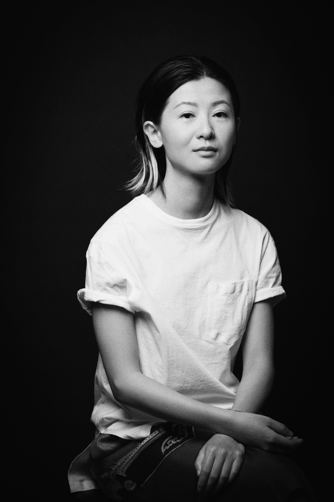

My Resume
Grace Dong

I am a sales personnel and stylist specialized for designers' clothing store.
Education
Nanyang Technological University
Jun 2006 - Jun 2009, Singapore
Work Experience
Club 21 Multi-brand Ladies' Store/Style Consultant
Jan 2018 - Jun 2023, Singapore
- I managed and followd up with a client base of 50 to 100 people, achieved 30k to 50k sales revenues monthly.
-
I provided highly-customized services to clients from all over the world. I did styling catered to
their specified needs, I suggested and assisted with tailoring modification.
- I managed more than 20 desinger brands at the same time at any given moment, displaying accroding to
seasonal theme. I also advised our buyers with buying stretegy to maximise the sell through.
Skills
- Customer service ⭐️⭐️⭐️⭐️⭐️
- Customer management ⭐️⭐️⭐️⭐️⭐️
- Product management ⭐️⭐️⭐️⭐️⭐️
More About Me